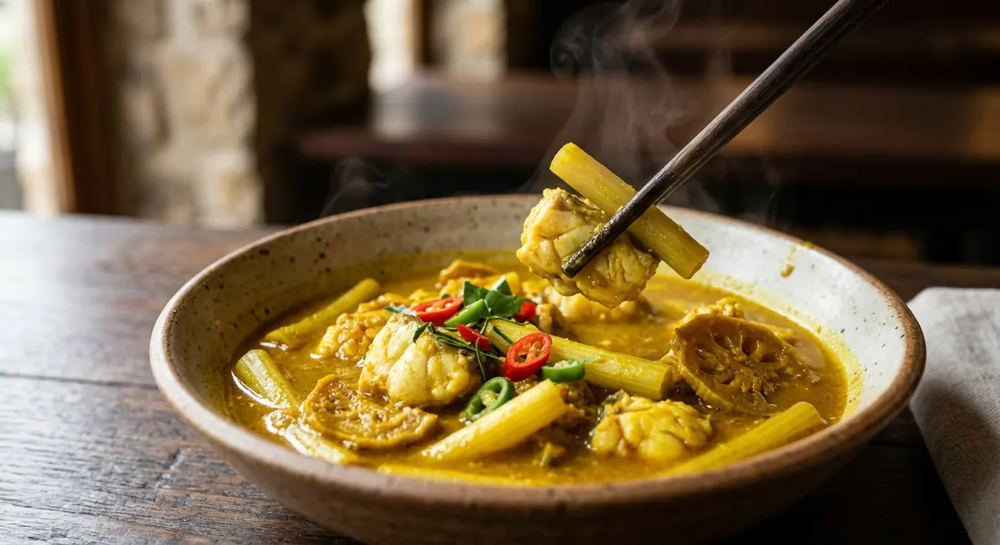

The south's own name for sour curry: turmeric-yellow, sour first and hot after, a clean broth with fish added last and whatever vegetable the season offers.

แกงเหลือง — "the yellow curry" — is what southern Thailand calls its sour curry. Aroifin's recipe page puts it plainly: it is the dish southerners call แกงส้ม, and Wongnai's headline agrees — kaeng luang is southern kaeng som. The yellow comes from turmeric, as Kapook's compilation notes, and the taste runs sour first, hot after — Aroifin's "เปรี้ยวนำ เผ็ดตาม", the fisherman on Kapook writing that the sour-hot broth leading is exactly what makes it southern kaeng som: sour, salty, hot. TrueID's writer calls it simply the south's signature local dish.
The paste is a small, pure thing: chillies, turmeric, shallots, garlic, shrimp paste and salt, pounded — no dry spices, no coconut, no lemongrass-heavy central chassis. Aroifin's tips box holds the craft: pound the chillies and salt first; the finer the paste, the thicker, more fragrant and better-coloured the broth; and simmer the paste in the water until the raw smell is gone and the water has turned deep yellow before anything else enters the pot.
Then the rules everyone agrees on. The fish goes in last, without stirring, cooked only just through — Aroifin warns that fish added too early leaves the broth fishy and the aroma dead. The sourness splits by house: Aroifin simmers ส้มแขก, dried garcinia, letting it release its acid slowly; Wongnai and the seller's recipe use tamarind water with a final squeeze of lime off the heat; the fisherman's pot gets lime alone. The body is the season's choice — green papaya, pickled bamboo shoots, lotus stems, pineapple, coconut heart — and the table is fixed: hot rice, fried fish, sataw and fresh vegetables alongside.
| Thai | English | Amount |
|---|---|---|
| พริกแห้งเม็ดเล็ก (แช่น้ำให้นิ่ม) | Small dried chillies, soaked | 10 |
| พริกขี้หนูสวน | Garden bird's eye chillies | 10 |
| เกลือป่น | Salt | 1 tsp |
| ขมิ้น | Turmeric | 2 knobs |
| หอมแดง | Shallots | 7 heads |
| กระเทียม | Garlic | 7 cloves |
| กะปิ | Shrimp paste | ½ tbsp |
| ปลากะพง (แล่เป็นชิ้น ๆ) | Seabass, filleted | 1 whole |
| เกลือ (สำหรับล้างปลา) | Salt, to wash the fish | 1 tbsp |
| ไหลบัว | Lotus stems | 300 g |
| น้ำเปล่า | Water | 4 cups |
| ส้มแขก | Dried garcinia | 1 cup |
| น้ำปลา | Fish sauce | 4 tbsp |
| น้ำตาลปี๊บ | Palm sugar | 1 tbsp |
The papaya bowl (Wongnai): 15 dried and 15 fresh chillies with galangal added to the paste, a whole seabass and one green papaya in 1.5 litres of water, seasoned only with tamarind and a squeeze of lime — no sugar at all. The seller's batch (TrueID, แม่ซี): 20 soaked dried chillies, 20 jinda reds, lemongrass, turmeric, two seabass and 1.5 kg of pickled bamboo shoots, seasoned with palm and white sugar, tamarind and five lime wedges squeezed in off the heat. The quick pot (TrueID): three spoons of ready kaeng luang paste in 3–4 cups of water with prawns and coconut heart. The fisherman's bowl (Kapook): pickled bamboo shoots boiled first in plain water, then into the paste broth with whatever fish the boat brought in — fish sauce, lime and a pinch of sugar.
The sour. Three schools. Aroifin and Kapook's pineapple version use ส้มแขก, dried garcinia, simmered into the broth. Wongnai and the seller's recipe use tamarind water with lime squeezed in after the heat is off. The fisherman's pot is lime alone. Kapook's compilation even hedges: if you cannot find garcinia, use lime or tamarind instead.
The paste. The pure southern core — chillies, turmeric, shallots, garlic, shrimp paste, salt — is Aroifin's. Wongnai adds galangal; the seller adds lemongrass; and Kapook's fish-roe version adds krachai and pounded boiled fish meat, which its own author flags as central Thai curry style creeping into a southern pot.
The fish. Every source agrees on last-in, no-stirring, just-cooked. But which fish splits them: seabass in three recipes, prawns in two, and Kapook's list says anything from tilapia to tinned fish will do — the fisherman's answer to "which fish" is whatever the boat brought in.
The body. Green papaya (Wongnai), pickled bamboo shoots (Kapook, the seller), lotus stems (Aroifin, Kapook's prawn version), pineapple and coconut heart. The vegetable is the season's choice, not a fixed ingredient — Kapook's compilation exists precisely because no single version is canonical.
Sugar or not. Wongnai's recipe lists no sugar at all — sour and salt only. Everyone else rounds the broth with palm or white sugar.
Seasoning powder. The two seller-style recipes add ผงปรุงรส; the home pots and the fisherman's pot do not.
This recipe is translated from the following Thai-language sources. Where they disagree, we've said so.
1. Aroifin — "วิธีทำ แกงเหลือง ปลากะพงไหลบัว รสจัดจ้านแบบปักษ์ใต้แท้" by mimi (the recipe used here) — aroifin.com
2. Wongnai — "แจกสูตรฟรี 'แกงเหลืองปลากะพง' เมนูแกงรสจัดจ้าน ตำรับปักษ์ใต้!" (the papaya version) — wongnai.com
3. TrueID Food — "สูตรทำ แกงเหลือง ปลากะพงหน่อไม้ดอง แกงส้มใต้ จัดจ้านฉบับคนใต้แท้!" by Maysylvie (the seller's batch) — food.trueid.net
4. Kapook — "แกงเหลืองหน่อไม้ดองใส่ปลา เปรี้ยวเผ็ดสีสวยสูตรอร่อยตำรับปักษ์ใต้" (the fisherman's pot) — cooking.kapook.com
5. Kapook — "7 เมนูแกงเหลือง สูตรกับข้าวรสแซ่บตำรับปักษ์ใต้" (the roe, lotus-stem and pineapple versions) — cooking.kapook.com
6. TrueID Food — "แกงเหลืองยอดมะพร้าวกุ้งสด ล่องใต้หรอยแรง" by คำฝอย (the coconut-heart quick version) — food.trueid.net